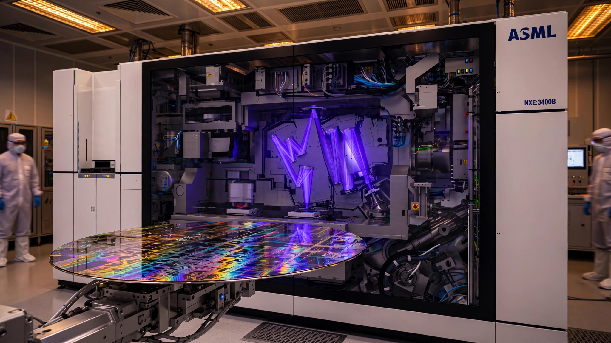

Intel Just Shipped the First Chips Made With a $400 Million Machine. The Math Says It Already Pays for Itself.
On July 15, Intel became the first chipmaker to ship commercial processors patterned by ASML’s next-generation High NA EUV lithography. The machine costs twice what the current model does. It also replaces three critical-layer exposures with one, cutting capital costs per layer set by 33 percent. At Intel’s reported 15 percent initial yields, every Panther Lake die costs roughly five times what it will at maturity. Intel is eating that premium to buy real-world data on the only technology capable of printing sub-2 nm circuits for the next decade.

Four hundred million dollars for one machine. That is the price of a single ASML EXE:5200B, the High Numerical Aperture extreme ultraviolet lithography system that Intel began using on July 15 to pattern a subset of its Intel Core Ultra Series 3 “Panther Lake” processors on the 18A process node. No keynote accompanied the news, no press event, just an ASML release from Veldhoven confirming that for the first time in history, a commercial chip has shipped to paying customers with layers printed by the next generation of lithography, the same technology that will underpin every leading-edge processor manufactured on this planet for the next decade.
ASML’s CEO, Christophe Fouquet, put it plainly: “We are seeing that happening with all customers, and therefore expect to enter that discussion with all our customers on how exactly and when exactly the tool will be inserted in high volume manufacturing.” Everyone wants in. Intel declined to comment, which says more than any prepared statement could.
What Changed on July 15
Standard EUV lithography uses a lens with a 0.33 numerical aperture, and it changed everything when TSMC adopted it for 7 nm production in 2019, subsequently powering the march through 5, 4, 3, and 2 nm process nodes that gave us the chips running modern AI training clusters, flagship smartphones, and the cloud infrastructure behind every streaming service and search engine. Each scanner, the NXE:3800 family, costs roughly $200 million and processes about 200 wafers per hour. But physics has a limit. As feature sizes shrink below 2 nm, a single 0.33 NA exposure cannot resolve the finest patterns, so chipmakers resort to multi-patterning: printing the same layer two or three times with slight offsets, then combining the results, which is expensive, slow, and multiplies defect risk with every additional pass.
ASML’s High NA system bumps the numerical aperture to 0.55, which tightens the light’s focus enough to print features that previously required multiple exposures in a single shot. Resolution improves by roughly 70 percent — from 13 nm half-pitch on standard EUV to 8 nm on High NA. Intel’s deployment at its Hillsboro, Oregon R&D fab uses the EXE:5200B, the second-generation High NA scanner delivered to customers starting in Q4 2025. It processes 175 wafers per hour, somewhat slower than the standard tool’s 200, but with a crucial advantage: for the most critical layers, one exposure replaces three.
Intel dual-qualified specific 18A layers on both scanners, meaning those layers can be printed interchangeably on either the old NXE platform or the new EXE without affecting the wafer’s downstream processing or final chip performance. If the High NA machine goes down for maintenance, the line switches back to standard EUV with triple patterning and keeps producing without stoppage, without yield disaster, without a single engineer making a panicked phone call to Veldhoven at three in the morning.
The Multi-Patterning Economics Nobody Has Calculated
The headline price of High NA EUV is designed to induce vertigo: $400 million versus $200 million for standard EUV. Twice the price. But that framing omits the denominator that matters most: how many machines you need to pattern the same layer.
Consider a critical sub-2 nm layer requiring triple patterning on standard EUV. To achieve the throughput of a single production line, a fab needs three NXE scanners running in parallel, each executing one of the three patterning passes.
| Metric | Standard EUV (3 NXE) | High NA EUV (1 EXE) |
|---|---|---|
| Machines needed per critical layer | 3 | 1 |
| Capital cost per layer set | $600M | $400M |
| Effective throughput (wafer-layers/hr) | ~67 | 175 |
| Cleanroom footprint | 3 tool bays | 1 tool bay |
| Mask sets required | 3 | 1 |
Three standard EUV machines at $200 million each total $600 million. One High NA machine costs $400 million. Capital savings per critical layer set: $200 million, or 33 percent. Throughput math reinforces this. Each NXE scanner at 200 WpH needs to execute three passes per wafer on the critical layer, producing 200 ÷ 3 = 66.7 effective wafer-layers per hour. One High NA EXE does the job in one pass at 175 WpH — that is 2.6 times faster per critical layer despite being slower in raw wafer throughput, and it does it with two fewer masks, two fewer overlay registration steps, and two fewer opportunities to introduce particle defects.
Extend this across a leading-edge fab running six critical layers that require triple patterning at sub-2 nm, the kind of fab that TSMC, Samsung, and Intel are all racing to build for 2028 and beyond: replacing standard EUV with High NA on those layers alone saves $1.2 billion in scanner capital. A single High NA EXE breaks even against its three-machine alternative before it prints its first wafer, and it does so while freeing up cleanroom floor space, reducing mask inventories, and cutting the number of overlay alignment steps where invisible misregistration errors accumulate into yield-killing defects.
The Yield Tax Intel Is Paying
Intel’s willingness to ship Panther Lake with High NA layers is remarkable for a different reason. Publicly available reporting paints a grim picture of 18A yields. Sources close to Reuters said in late 2025 that yields on the 18A node were roughly 10 to 15 percent, a number Intel CFO David Zinsner implicitly confirmed by telling reporters that Panther Lake was “in its early ramp process.” Tom’s Hardware estimated that 18A yields were starting at around 15 percent, improving at roughly 7 percentage points per month, and would reach Intel’s typical 85 percent good-die target by early fall 2026. Intel itself said 18A would reach industry-standard yields in early 2027.
At 15 percent yield on a 300 mm wafer carrying approximately 200 die sites for a laptop-class processor, a fab produces 30 good dies per wafer. At an estimated 18A wafer cost of $17,500 per wafer, that translates to roughly $583 per good die. When yields reach 80 percent — 160 good dies per wafer — the cost drops to $109 per die.
| Yield | Good dies per wafer | Cost per good die | Multiplier vs. mature |
|---|---|---|---|
| 15% (current estimate) | 30 | ~$583 | 5.3× |
| 50% (launch threshold) | 100 | ~$175 | 1.6× |
| 80% (maturity) | 160 | ~$109 | 1.0× |
Every Panther Lake die Intel ships today costs approximately five times what it will at maturity. Intel is subsidizing every processor to collect something no R&D simulation can replicate: millions of data points from a High NA lithography tool running under real production stress on commercial silicon, the kind of data that reveals particle contamination patterns at the tenth-of-a-nanometer scale, overlay drift during 12-hour production runs, and resist chemistry behavior that varies with ambient humidity in ways that no test wafer in a controlled R&D environment can ever reproduce. That data feeds back into process development for Intel’s next nodes — 14A, then 10A — where High NA will be mandatory, not optional.
Five to Eight Machines for the Entire Planet
The scarcity of High NA tools makes this milestone sharper than it might otherwise appear. ASML shipped its first EXE:5000 in Q4 2023 and the improved EXE:5200B in Q4 2025. Total known deployments include Intel in Hillsboro, Oregon; Imec in Leuven, Belgium; Samsung and TSMC in evaluation mode; and as of today, July 21, the Albany NanoTech Complex in New York, where the first components of an ASML High NA system arrived for what will become North America’s only publicly owned research installation. Dave Anderson, director of NY Creates, expects the tool to be fully functional by year’s end.
That is perhaps five to eight machines on the entire planet. ASML’s production capacity for High NA systems is estimated at fewer than ten per year, which means the company that holds a complete monopoly on EUV lithography is now also the sole bottleneck for the technology that succeeds it. At $400 million each, the total installed base is worth $2 to $3.2 billion. You could park the entire fleet in one warehouse. By December 2025, this fleet had produced 500,000 High NA wafers, a number that sounds large until you learn that the global semiconductor industry processes more than 30 million 300 mm wafer starts every month.
The China Question Nobody Wants to Ask
ASML cannot sell any EUV system to China. Under sustained U.S. diplomatic pressure, the Dutch government imposed export controls in 2023 that bar shipments of EUV lithography equipment and, since early 2024, advanced DUV immersion tools as well. High NA is doubly restricted. SMIC, Huawei’s manufacturing partner, continues to produce chips using older DUV-only processes, achieving what most analysts estimate are 7 nm equivalent nodes through extreme multi-patterning — seven or more exposures where EUV would require one.
Between standard EUV and High NA, the gap is a single generational step. Between DUV multi-patterning and High NA, it is three. Intel’s deployment of High NA on commercial products widens the technology moat between the chip industries that have access to Veldhoven’s machines and the one that does not. Each passing quarter of High NA production data that Intel, TSMC, and Samsung accumulate creates process knowledge that has no substitute and no shortcut.
Strongest Counterargument
The strongest case against calling this a watershed: Intel is using High NA on only selected layers, not the entire chip. Dual-qualification means every High NA exposure is backstopped by standard EUV. The actual fraction of Panther Lake chips shipping with High NA patterned layers may be small — Intel has not disclosed the number, and the company declined to comment. ASML’s announcement is part press release, part advertisement for a product it needs other customers to buy. The yield-matching claim — “at yields matched to the NXE platform” — has not been independently verified. It is possible that Intel is running High NA on the easiest layers first, ones where the resolution advantage is modest and the overlay tolerance is forgiving, to generate a favorable headline before tackling the hard patterns.
Limitations
Intel has not disclosed what fraction of Panther Lake shipments use High NA patterned layers versus standard EUV. The yield figures cited in this analysis come from anonymous sources reported by Reuters and Tom’s Hardware, not from Intel’s official disclosures. Wafer costs are estimated from industry models; Intel does not publish per-wafer pricing for 18A. The multi-patterning capital comparison assumes three standard EUV exposures per critical layer — some layers may require only two, which would narrow the savings. Long-term reliability data for features patterned at 0.55 NA does not yet exist in the public record.
The Bottom Line
A $400 million lithography tool just printed its first commercial chip. That sentence sounds expensive until you run the capital math and discover it saves $200 million per critical layer set by consolidating three machines into one. Intel is paying a steep yield premium today — roughly five times the mature cost per die — to accumulate production data that will determine whether High NA can deliver on its promise of single-exposure patterning at sub-8 nm half-pitch. If it can, the economics of every advanced chip fab on Earth change, because the machine that costs twice as much turns out to need a third as many copies.
For semiconductor investors: ASML’s $400 million price tag just proved commercially viable in a production environment. Fewer than ten units sit in the installed base worldwide. Demand is orders of magnitude larger than supply. For chip buyers: some Panther Lake laptops arriving in stores this fall will contain processors partially manufactured by a tool that represents the apex of human-built precision optics. Performance difference for the end user is zero — that is the point. For policymakers tracking U.S. semiconductor competitiveness: today the first components of a High NA tool arrived at the Albany NanoTech Complex, the only publicly accessible site in North America. Whether the $10 billion CHIPS Act investment that funded it looks prescient or wasteful depends entirely on whether the country trains enough engineers who know how to use the machine once it turns on.